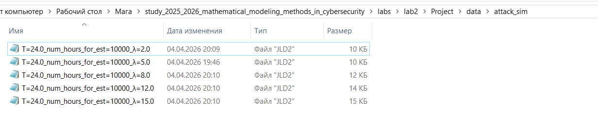
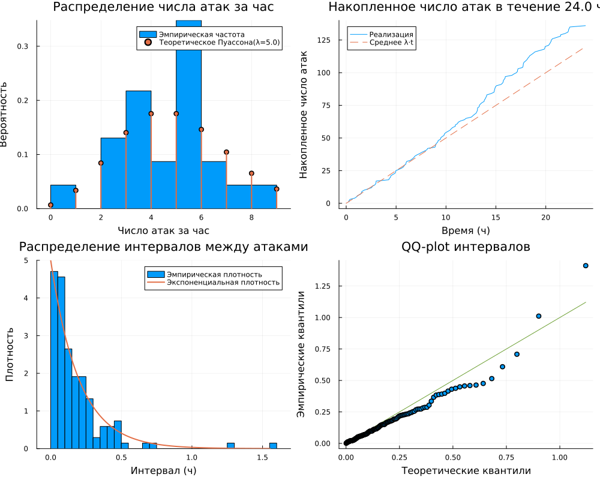
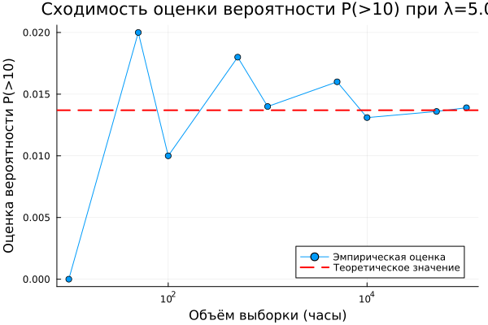
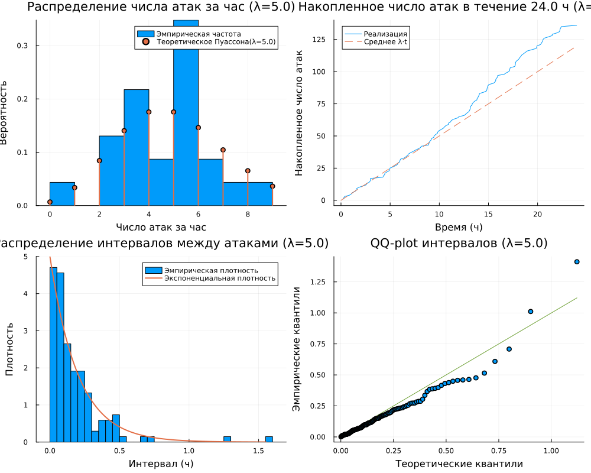
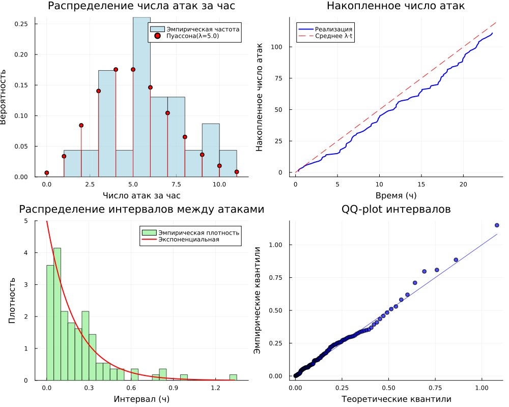
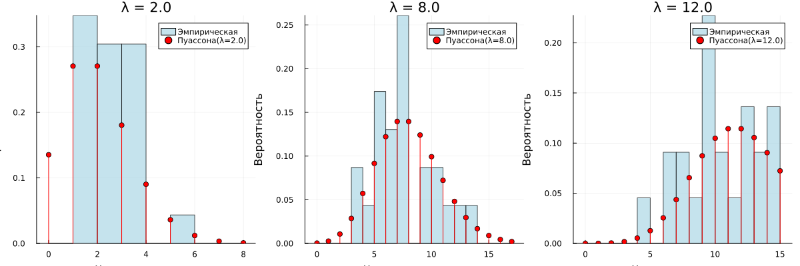
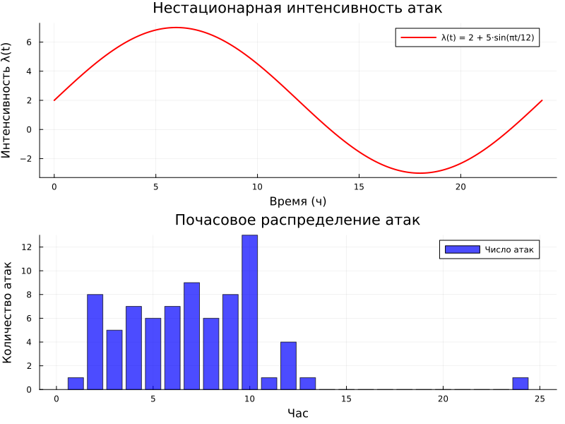
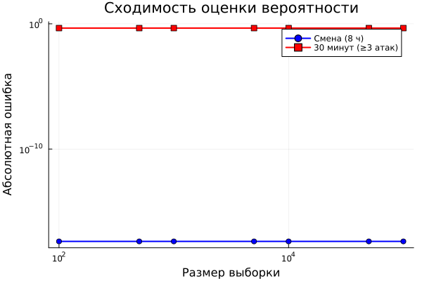
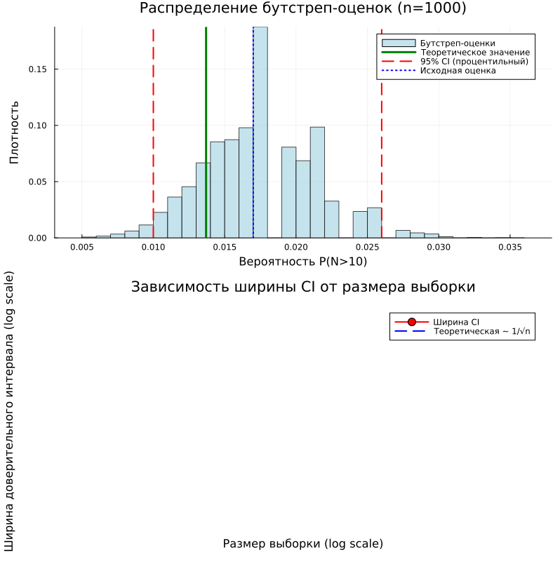
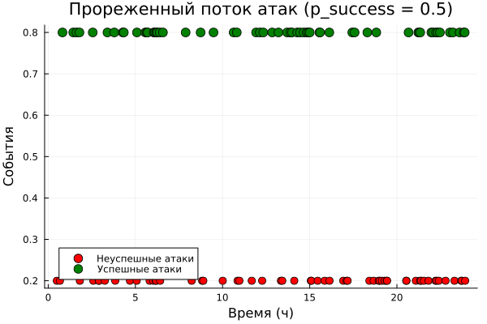

определить набор параметров модели (интенсивность атак, длительность
наблюдения и т.д.);
реализовать симуляцию пуассоновского потока атак;
выполнить статистический анализ результатов;
визуализировать данные и проверить соответствие теоретическим
распределениям.
Задание
Создать проект DrWatson с именем project.
Определить набор параметров модели (словарь params) с возможностью
варьирования.
Написать функцию simulate_attacks(params), которая возвращает
структуру с результатами симуляции (например, массив числа атак по
часам, интервалы, моменты времени).
Использовать produce_or_load для запуска симуляции с заданными
параметрами и сохранения результатов на диск.
Провести серию экспериментов с разными значениями параметров
(например, разные , разная
длительность).
Загрузить сохранённые результаты и выполнить:
построение гистограммы числа атак за час и сравнение с теоретическим
распределением Пуассона;
построение графика накопленного числа атак и интервалов между
атаками;
проверку экспоненциальности интервалов (гистограмма, QQ-plot,
возможно критерий согласия);
оценку вероятности события «более 10 атак за час» теоретически и
эмпирически.
Проанализировать зависимость точности оценки вероятности от числа
симуляций.
Теоретическое введение
Во многих задачах кибербезопасности поток атак (или инцидентов) можно
приближённо считать простейшим (пуассоновским) потоком. Для такого
потока число событий за время распределено по закону Пуассона:
где — интенсивность
потока (среднее число событий в единицу времени).
В простейшем потоке интервалы времени между соседними событиями независимы и имеют экспоненциальное распределение
с параметром :
Генерация данных (run_experiment.jl) — получение реализаций для
фиксированных параметров.
Анализ и визуализация (analyze.jl) — проверка соответствия модели
теоретическим распределениям.
Исследование сходимости (convergence.jl) — изучение точности
оценок.
Параметрическое исследование (parameter_sweep.jl) — анализ
чувствительности к изменению интенсивности.
Для выполнения работы необходимо создать проект с помощью DrWatson.
Затем создадим в этом проекте скрипт src/simulation.jl, который содержит
функцию simulate_attacks, реализующую вероятностную модель потока
атак.
Выполнение лабораторной
работы
Создание и
инициализация проекта DrWatson

Установка необходимых
пакетов
Выполнение лабораторной
работы
Ядро моделирования:
Файл: src/simulation.jl
Создаём файл src/simulation.jl, функция simulate_attacks реализует
вероятностную модель потока атак.
Эта функция:
Принимает интенсивность потока (среднее число атак
в час) и длительность наблюдения T (в часах).
Генерирует две реализации потока:
Почасовое число атак (hourly_counts) — массив длины floor(Int, T),
каждый элемент — случайное число из распределения Пуассона с параметром
.
Точные моменты атак — моделирование экспоненциальных интервалов
между событиями до тех пор, пока их сумма не превысит T. Возвращает
массив интервалов intervals и массив моментов времени attack_times
(накопленные суммы).
Возвращает NamedTuple с тремя полями: hourly_counts, intervals,
attack_times.
Результат:
Функция не сохраняет данные самостоятельно, а лишь возвращает
структуру, которая затем используется в скриптах для дальнейшего анализа
или сохранения.
Выполнение лабораторной
работы
Запуск
эксперимента с сохранением результатов: однократный запуск
эксперимента
Файл scripts/run_experiment.jl выполняет симуляцию с
заданными параметрами, вычисляет эмпирическую вероятность события «более
10 атак за час» и сохраняет все результаты на диск. Скрипт предназначен
для первичной генерации данных, которые потом будут анализироваться.
Результат:
— В папке data/attack_sim/ создаётся файл с именем, отражающим
параметры (например, attack_sim_=5.0_T=24.0_num_hours_for_est=10000.jld2). —
Внутри — словарь с ключами: :hourly_counts, :intervals, :attack_times,
:emp_prob, :theor_prob.
Выполнение лабораторной
работы
Анализ и
визуализация результатов одного эксперимента
Файл scripts/analyze.jl загружает сохранённые данные и
строит четыре диагностических графика, позволяющих визуально оценить
соответствие смоделированного потока теоретическим предположениям
(пуассоновости и экспоненциальности).
Выполнение лабораторной
работы
Анализ
и визуализация результатов одного эксперимента

Визуализация результатов одного
эксперимента
Выполнение лабораторной
работы
Исследование
сходимости оценки вероятности
Файл scripts/convergence.jl позволяет изучить, как быстро
эмпирическая оценка вероятности редкого события приближается к
теоретическому значению при увеличении объёма выборки.Это важный
практический аспект моделирования: для надёжной оценки редких событий
требуется большой объём данных.
Результат: График, иллюстрирующий уменьшение случайной ошибки оценки
с ростом выборки, и файл с данными для повторного построения.
Выполнение лабораторной
работы
Исследование
сходимости оценки вероятности

Сходимость оценки
вероятности
График, иллюстрирующий уменьшение случайной ошибки оценки с ростом
выборки, и файл с данными для повторного построения.
Выполнение лабораторной
работы
Многовариантный
эксперимент: параметрическое исследование
Файл scripts/parameter_sweep.jl позволяет систематически
изучить, как изменение интенсивности атак влияет на
характеристики потока и, в частности, на вероятность P(> 10). Скрипт
автоматизирует запуск множества экспериментов, сохраняет все результаты
и строит как обобщающий график, так и детальные графики для каждого
значения .
Выполнение лабораторной
работы
Многовариантный
эксперимент: параметрическое исследование
Зависимость вероятности от интенсивности
атак
Результат:
— Набор JLD2-файлов для каждого в data/attack_sim/.
— Детальные графики для каждого в
plots/parameter_sweep/. — Сводная таблица (CSV) и файл с данными в
data/parameter_sweep/. — Обобщающий график в корне plots/, показывающий
зависимость вероятности от интенсивности.
Выполнение лабораторной
работы
Многовариантный
эксперимент: параметрическое исследование

Зависимость вероятности от интенсивности
атак
Выполнение лабораторной
работы
Литературный стиль
Преобразовываем в производные форматы с помощью файла
tangle.jl

Задание
Дополнительные задания
1 задание
Изменить интенсивность (например, 2, 8, 12
атак/час) и сравнить результаты.
При =2 распределение
числа атак сдвинуто влево — пик около 1-2 атак за час, эмпирическая
гистограмма хорошо совпадает с теоретическим Пуассоном(2). Интервалы
между атаками большие — около 0.3-2 ч. Вероятность P(>10) близка к
нулю (~8.3·10⁻⁶).
При =8 распределение
смещается вправо — пик около 7-8 атак за час, интервалы короткие —
большинство менее 0.2 ч. Вероятность P(>10) резко возрастает
(~0.184).

Дополнительное задание
Выполнение лабораторной
работы
2 задание
Моделировать нестационарный пуассоновский поток с
интенсивностью, зависящей от времени суток: .
Модифицировать функцию симуляции (использовать метод прореживания или
неоднородный пуассоновский процесс).

Дополнительное задание
Выполнение лабораторной
работы
3 задание
Исследовать вероятность события «ни одной атаки за смену (8
часов)» или «не менее 3 атак за 30 минут»

Дополнительное задание
Выполнение лабораторной
работы
4 задание
Оценить доверительный интервал для вероятности редкого
события методом бутстрепа.
С помощью бутстрапа и прореживания потока находим 95-проуентный ДИ и
визуализируем.

Дополнительное задание
Выполнение лабораторной
работы
5 задание
Добавить в модель возможность успешности атаки: каждая атака
имеет вероятность успеха 𝑝, тогда успешные атаки образуют прореженный
п
Добавляем вероятность успешности атаки и рассчитываем соответствующие
вероятности.

Дополнительное задание
Выводы
Сформирована структура рабочего пространства на основе DrWatson,
обеспечивающая разделение исходных кодов, данных и документации.
Реализована симуляция пуассоновского потока атак двумя способами:
почасовые счётчики из распределения Пуассона и точные моменты через
экспоненциальные интервалы.
Выполнен статистический анализ результатов: гистограммы, накопленный
график, QQ-plot — все подтверждают соответствие теоретическим
распределениям.
Проведено параметрическое исследование: показана зависимость
P(>10) от интенсивности — при росте от 2 до 15
вероятность возрастает от ~0 до ~0.88.
Исследована сходимость оценки вероятности редкого события: для
надёжной оценки P(>10) при =5 необходим объём
выборки порядка 10 000–100 000 часов.
Выполнена интеграция вычислительных экспериментов с их описанием за
счёт преобразования кода в литературный стиль.